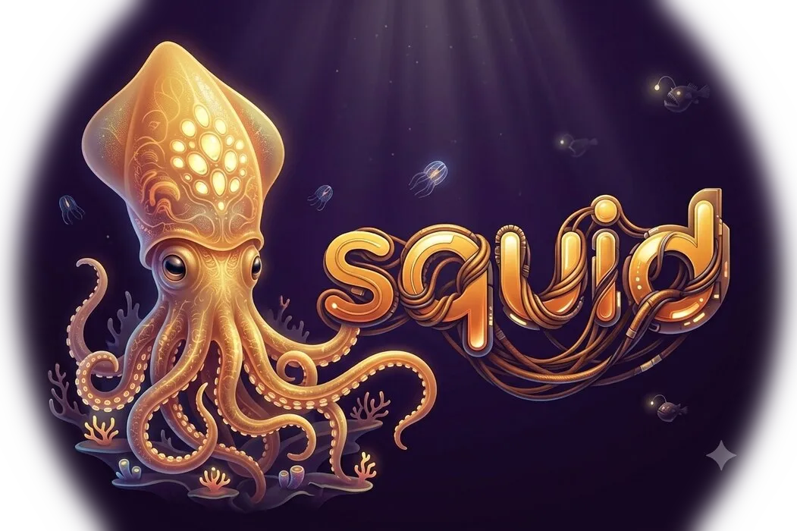

One conversational interface for your projects, files, documents, applications, and workflows. Coding is only part of your day — Squid OS is built for everything else too.
Modern coding agents stop at your repository. Your work doesn't.
Squid OS operates across your entire environment, letting you move seamlessly between projects, documents, terminal sessions, applications, and system tasks — all from a single conversation.
AI shouldn't disappear behind a progress spinner.
Every action, tool call, and decision stays visible and under your control. Interrupt instantly, inspect what happened, understand the cost, and stay in control of your machine from start to finish.
Ideas shouldn't wait for your tools.
Designed as a native Go TUI, Squid OS removes friction with instant conversation switching, fast cancellation, keyboard-first workflows, and an interface that keeps up with the speed you think.
Built from day one for fast local inference without sacrificing support for cloud providers.
Whether you're running a local GPU or using your favorite hosted model, Squid OS is optimized for responsiveness, token efficiency, and long-running conversations.
Planning a feature. Reviewing a pull request. Investigating production issues. Preparing a release. Instead of solving these with longer prompts, Squid OS solves them with Skills.
Skills package knowledge, workflows, and deterministic logic into reusable building blocks that every project can share. Version them with Git and make your operating system smarter with every workflow you automate.
Squid OS continuously compresses repetitive execution history, preserving what matters while reducing wasted tokens. Stay in the same conversation for hours without carrying unnecessary baggage.
Inspect every inference, token count, execution time, reasoning stream, and tool call. Learn how your models behave, compare providers, and optimize your workflows with complete visibility.
Code isn't the only thing worth versioning. Keep your Skills, memories, documents, prompts, and workflows under Git so every part of your AI workspace is traceable, recoverable, and easy to share.
Your workflow shouldn't depend on modifying Squid OS itself. Extend it in your preferred language, integrate existing tools, and build new capabilities without maintaining a custom fork.
Run locally with Ollama, vLLM, or LiteLLM, connect to leading cloud providers, or use your ChatGPT subscription. Squid OS provides one consistent experience regardless of where your models run.
Operate your projects, documents, applications, and entire operating system through one conversational interface.